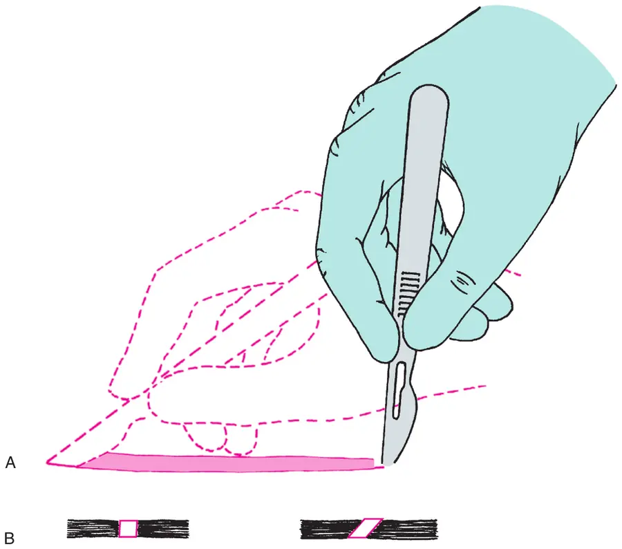
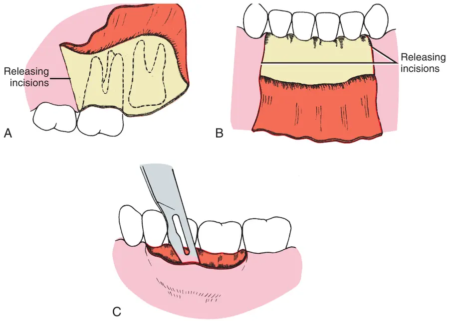

نسخه استخراجشده؛ ترجمه یا تأیید علمی انجام نشده است. وضعیت: captured
قدم 1 · theory
برش و فلپ
پنج اصل برش:

روش درست برش با تیغ شماره ۱۵؛ حرکت از مچ میآید نه از ساعد (Hupp, Ellis & Tucker. Contemporary OMFS, 7th ed. — Fig. 3.1)
۱ — تیغی تیز و با اندازهی مناسب باید هنگام برش به کار رود — و ضربههای مکرر و مردد، مقدار بافت آسیبدیده درون زخم و مقدار خونریزی را بیشتر میکنند؛ اینها ترمیم زخم و دید را مختل میسازند. ضربههای بلند و پیوسته بر ضربههای کوتاه و منقطع ترجیح دارند.
۲ — جراح باید با دقت از بریدن تصادفی ساختارهای مهم پرهیز کند — چون میکروآناتومی هر بیمار یگانه است. پس برای پرهیز از بریدن ناخواستهی رگهای بزرگ یا اعصاب، جراح باید تنها بهقدری عمیق ببرد که لایهی اصلی بعدی را مشخص کند، وقتی نزدیک مسیر رگها و مجاری و اعصاب مهم برش میزند.
و منطقش: رگها پیش از آنکه کاملاً قطع شوند آسانتر کنترل میگردند، و اعصاب مهم معمولاً میتوانند از بافت مجاور آزاد و از ناحیهی برش کنار زده شوند.
۳ — برشهایی که از سطوح اپیتلیالی میگذرند و جراح قصد نزدیک کردن دوبارهشان را دارد، باید با تیغی عمود بر سطح اپیتلیال زده شوند — چون این زاویه لبههای زخم مربعی میسازد که جاگذاری درستشان حین بخیه آسانتر است و کمتر مستعد نکروز لبهی زخم بر اثر ایسکمیاند.
۴ — برشها در حفرهی دهان باید بهدرستی جاگذاری شوند — و برش از راه لثهی چسبنده و روی استخوان سالم، مطلوبتر از برش از راه لثهی غیرچسبنده و روی استخوان ناسالم یا غایب است. و برشهای درستجاگذاریشده اجازه میدهند حاشیههای زخم روی استخوان سالم و دستنخوردهای بخیه شوند که دستکم چند میلیمتر از استخوان آسیبدیده فاصله دارد.
۵ — و برش روی برجستگیهایی مانند برجستگی کانین بهتر است پرهیز شود، چون فشار برجستگی بر زخم بستهشده میتواند با ترمیم زخم تداخل کند؛ و برشهای نزدیک دندانها برای کشیدن باید در سالکوس لثهای زده شوند، مگر آنکه پزشک برداشتن لثهی حاشیهای یا دستنزدن به آن را ضروری بداند.
و حالا فلپ — سه عارضهی اصلی که طراحی باید از آنها پیشگیری کند: نکروز، دهیسنس، و پارگی.
پیشگیری از نکروز — چهار اصل:
۱ — ارتفاع فلپ هرگز نباید از قاعده بیشتر باشد، مگر آنکه شریان بزرگی در قاعده حاضر باشد. و ترجیحاً فلپها باید اضلاعی داشته باشند که موازی هم باشند یا از قاعده به رأس همگرا شوند.
۲ — عموماً ارتفاع فلپ نباید بیش از دو برابر عرض قاعده باشد؛ و ترجیحاً عرض قاعده باید بیشتر از ارتفاع فلپ باشد. و یک واقعگرایی: پایبندی سخت به این اصل در حفرهی دهان بهعلت عروقرسانی قوی مخاط دهان کمبحرانیتر است، ولی بهطور کلی طول فلپ هرگز نباید از عرض فراتر رود.
۳ — در صورت امکان، خونرسانی محوری باید در قاعدهی فلپ گنجانده شود — برای نمونه: فلپی در کام، در صورت امکان، باید به سمت شریان پالاتین بزرگ پایهگذاری شود.
۴ — قاعدهی فلپها نباید بیشازحد پیچانده، کشیده، یا با چیزی که ممکن است به رگها آسیب بزند گرفته شود، چون این مانورها میتوانند خونرسانی تغذیهکننده و تخلیهکنندهی فلپ و نیز لنفاتیکهای ظریف را بهخطر بیندازند.
پیشگیری از دهیسنس — سه اقدام: نزدیک کردن لبههای فلپ روی استخوان سالم، دست زدن ملایم به لبههای فلپ، و نگذاشتن لبهها زیر کشش.
و یک آزمون ساده: نباید نیاز باشد هیچ نیروی معناداری برای کشیدن بافتها به هم حین بخیه زدن به کار رود.
و پیامد دهیسنس: استخوان زیرین و سایر بافتها را آشکار میکند، و درد، از دست رفتن استخوان، و اسکار بیشتر تولید مینماید.
پیشگیری از پارگی — و اصل کلیدیاش: پارگی فلپ عارضهای رایج در جراح تازهکار است که میکوشد عملی را با فلپی انجام دهد که دسترسی ناکافی میدهد.
و اصلی که بارها در این مسیر دیدی: چون برش بلندی که بهدرستی ترمیم شود به همان سرعت برش کوتاه ترمیم مییابد، بهتر است در آغاز جراحی فلپی بهقدر کافی بزرگ ساخته شود تا جراح از پاره کردنش یا قطع جراحی برای بلندتر کردنش پرهیز کند.
و فلپ پاکتی (envelope): فلپهایی که با برشهایی ساخته میشوند که فلپ یکطرفه تولید میکنند — برای نمونه، برشی گرد گردن چند دندان برای آشکار کردن استخوان آلوئولار بدون هیچ برش رهاکنندهی عمودی.
و قاعدهی برش رهاکننده — سه نکته که باید بدانی:
برشهای رهاکنندهی عمودی (مایل) عموماً باید یک دندان کامل قدامیتر از ناحیهی هر برداشت استخوان پیشبینیشده گذاشته شوند.
و برش عموماً از لاینانگل دندان یا در پاپیلای بیندندانی مجاور آغاز و بهصورت مایل و آپیکالی به لثهی غیرچسبنده برده میشود.
و نیاز به بیش از یک برش رهاکننده، هنگام استفاده از فلپ برای دسترسی روتین جراحی دهان، غیرمعمول است.
قدم 2 · theory
دست زدن به بافت، و کنترل خونریزی
با یک جملهی سنجیده آغاز کنیم: تفاوت میان نتیجهی جراحی قابلقبول و نتیجهی عالی، اغلب بر این استوار است که جراح چگونه با بافتها رفتار میکند.

سه نوع فلپ بافت نرم دهانی که درست طراحی شدهاند (Hupp, Ellis & Tucker. Contemporary OMFS, 7th ed. — Fig. 3.3)
و چه چیزهایی بهآسانی به بافت آسیب میزنند؟ کشیدن یا له کردن بیشازحد، دماهای حدی، خشک شدن، یا استفاده از مواد شیمیایی غیرفیزیولوژیک.
و قواعد عملی:
وقتی فورسپس بافتی به کار میرود، نباید بیشازحد به هم فشرده شود؛ بلکه باید برای نگه داشتن ظریف بافت استفاده گردد. و در صورت امکان، فورسپس دندانهدار یا قلاب بافتی باید برای نگه داشتن بافت به کار رود.
بافتها نباید بیشازحد تهاجمی برای دسترسی جراحی بیشتر کنار زده شوند — و این شامل نکشیدن بیشازحد گونهها یا زبان حین جراحی است. و افزون بر این، کنار زدن بیشازحد برای بیمار ناراحتکننده است، حتی اگر گونهها یا زبان بیحس شده باشند.
وقتی استخوان بریده میشود، مقادیر فراوان شستوشو باید به کار رود تا مقدار آسیب استخوانی ناشی از گرمای اصطکاکی کم شود؛ و بافت نرم هم باید از گرمای اصطکاکی یا ترومای مستقیم ابزار سوراخکننده محافظت گردد.
بافت نباید اجازهی خشک شدن یابد؛ زخمهای باز باید مکرراً مرطوب یا با اسفنج نمناک پوشانده شوند اگر جراح مدتی رویشان کار نخواهد کرد.
و تنها مواد فیزیولوژیک باید با بافت زنده تماس پیدا کنند — برای نمونه: فورسپس بافتی که برای گذاشتن نمونه در فرمالین حین بیوپسی به کار رفته، نباید به زخم بازگردد تا وقتی هر فرمالین آلودهکننده کاملاً پاک شود.
و جملهی پایانی این بخش، که ارزش حفظ کردن دارد: جراحی که با بافت بهآرامی و فیزیولوژیک رفتار میکند، با بیماران سپاسگزاری پاداش میگیرد که زخمهایشان با عوارض کمشمارتری ترمیم مییابد.
و هموستاز — چهار دلیل که چرا فراتر از حفظ خون است:
۱ — پیشگیری از دست رفتن بیشازحد خون حین جراحی، برای حفظ ظرفیت حمل اکسیژن بیمار مهم است.
۲ — کاهش دیدی که خونریزی کنترلنشده ایجاد میکند — و واقعبین باشیم: حتی ساکشن پرحجم هم نمیتواند میدان جراحی را کاملاً خشک نگه دارد، بهویژه در نواحی خوبعروقرسانیشدهی دهان و فک و صورت.
۳ — تشکیل هماتوم، یعنی تجمع خون زیر بافت نرم — و هماتومها بر زخم فشار میآورند و عروقرسانی را کم میکنند.
۴ — و خون تجمعیافته در زخم، میتواند منبع مغذی عالی برای باکتریها باشد.
و همین اصل چهارم را در سراسر این مسیر دیدهای: در عفونتهای ادنتوژنیک، در مکوستاز سینوس، و در هماتوم کف دهان پس از برداشتن توروس — هر مایع راکد، محیط کشت است.
قدم 3 · question
چگونه از بریدن تصادفی ساختارهای مهم پرهیز میشود و منطقش چیست؟
۰۱
نزدیک رگها و اعصاب مهم، هر بار فقط تا لایهی اصلی بعدی ببرد، چون میکروآناتومی هر بیمار یگانه است و رگ پیش از قطع کامل آسانتر کنترل میشود
۰۲
چون آناتومی در همهی بیماران یکسان است، حفظ کردن مسیرهای استاندارد کافی است، و برش باید در یک حرکت و تا عمق نهایی زده شود تا لایهبندی مصنوعی ایجاد نگردد
۰۳
با استفاده از الکتروکوتر بهجای تیغ در همهی برشها، چون کوتر رگها را همزمان میبندد و اعصاب را نمیبرد
۰۴
با گرفتن تصویربرداری سهبعدی پیش از هر برشی و علامتگذاری مسیر اعصاب روی پوست، و بدون آن هیچ برشی مجاز نیست
قدم 4 · question
برشهای نزدیک دندانها برای کشیدن، کجا باید زده شوند؟
۰۱
در سالکوس لثه، مگر آنکه پزشک برداشتن لثهی حاشیهای یا دستنزدن به آن را لازم بداند
۰۲
همیشه در عمق وستیبول و دور از حاشیهی لثه، بدون هیچ استثنایی و در همهی کشیدنهای ساده و جراحی
۰۳
همیشه روی ستیغ ریج و در ناحیهی بیدندان مجاور
۰۴
محل برش در این موارد اهمیتی ندارد و تنها به سلیقهی جراح و دسترسی مورد نیازش بستگی دارد
قدم 5 · question
سه عارضهی اصلی جراحی فلپ که طراحی باید از آنها پیشگیری کند کداماند؟
۰۱
نکروز، دهیسنس، و پارگی
۰۲
عفونت، خونریزی، و اسکار
۰۳
بیحسی، درد، و تورم
۰۴
تحلیل استخوان، لق شدن دندان، و از دست رفتن لثه
قدم 6 · question
دهیسنس حاشیهی فلپ چگونه پیشگیری میشود و پیامدش چیست؟
۰۱
با گذاشتن پک فشاری روی زخم به مدت یک هفته، و پیامدش تنها تأخیر در ترمیم بدون هیچ از دست رفتن استخوانی
۰۲
با بخیههای محکمتر و بیشتر که لبهها را با نیرو به هم نگه دارند، و پیامد دهیسنس تنها یک نقص زیبایی گذراست بدون هیچ اثر بافتی
۰۳
لبهها روی استخوان سالم، با دست زدن ملایم و بدون کشش بسته شوند؛ دهیسنس استخوان را آشکار و درد، تحلیل و اسکار بیشتر میسازد
۰۴
با تجویز آنتیبیوتیک پیشگیرانه، و پیامد دهیسنس همیشه عفونت است نه از دست رفتن بافت
قدم 7 · question
چرا هموستاز فراتر از حفظ حجم خون اهمیت دارد؟
۰۱
حفظ اکسیژنرسانی، دید بهتر، پیشگیری از هماتوم، و نگرفتن محیط کشت برای باکتری
۰۲
تنها حفظ ظرفیت حمل اکسیژن اهمیت دارد و سایر جنبهها فرعی و کماهمیتاند، چون خون تجمعیافته در زخم هیچ اثر منفیای بر ترمیم یا خطر عفونت ندارد
۰۳
تنها بهدلیل کوتاه کردن زمان جراحی و راحتی جراح، و هیچ پیامد بیولوژیکی برای بیمار ندارد
۰۴
تنها بهدلیل ملاحظات قانونی و مستندسازی حجم خون از دسترفته، و هیچ ارتباطی با ترمیم زخم ندارد